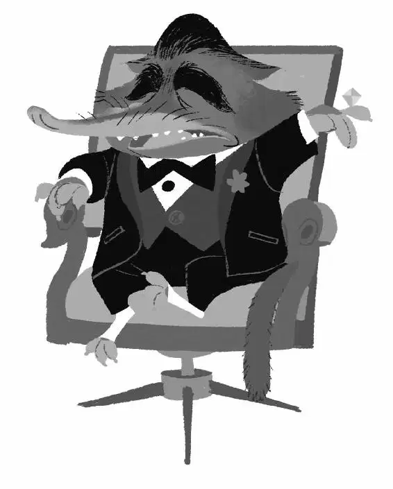

Judy and Nick found Weaselton standing on a street corner, selling random junk. “Anything you need...I got it,” he called. “All your favorite movies! I got movies that haven’t even been released yet!” In front of him were knockoff movies like Wreck-It Rhino, Wrangled, and Pig Hero 6.
“Well, well, look who’s back in the bootleg business,” Nick said, walking up to him.
“What’s it to you, Wilde? Shouldn’t you be melting down a pawpsicle or something?” Weaselton recognized Judy. “Hey, if it isn’t Flopsy the Copsy.”
“We both know those weren’t moldy onions I caught you stealing,” said Judy. “What were you going to do with those night howlers, Wezzleton?”
“It’s Weaselton! Duke Weaselton. And I ain’t talking, rabbit. And ain’t nothing you can do to make me.” He flicked a toothpick in her face. Judy turned to Nick and smiled. She knew they had the exact same idea.
Not long after, polar bears held Weaselton over the icy death pit inside Mr. Big’s place. “Ice ’im,” said Mr. Big.
Weaselton screamed and squirmed, trying to break free. “You dirty rat! Why you helping her? You know she’s a cop!”
Mr. Big motioned for his polar bears to wait as they dangled Weaselton over the pit. “And the godmother to my future granddaughter.”
Fru Fru emerged from the other room, showing off her pregnant belly. “I’m going to name her Judy,” said Fru Fru happily.
“Aw,” said Judy.
“Ice this weasel,” Mr. Big ordered.
“Wait! Stop! I’ll talk!” screamed Weaselton. “I stole them night howlers because I could sell them for a lot of dough.”
“And to whom did you sell them?” asked Judy.
“A ram named Doug. We got a drop spot underground. Just watch it. Doug ain’t exactly friendly.”
